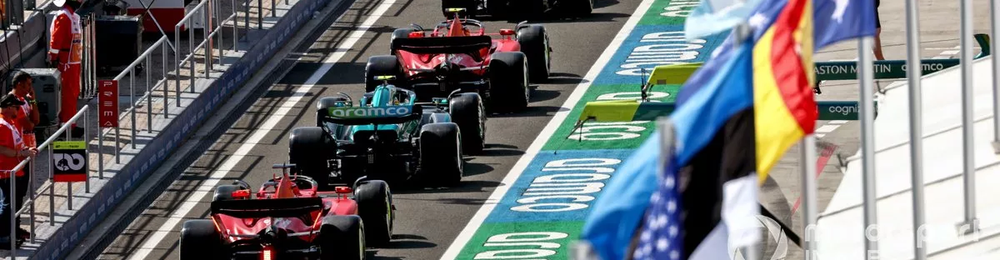
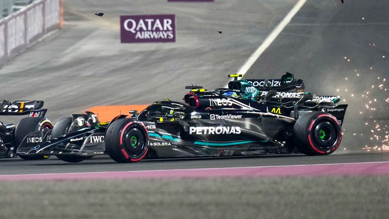
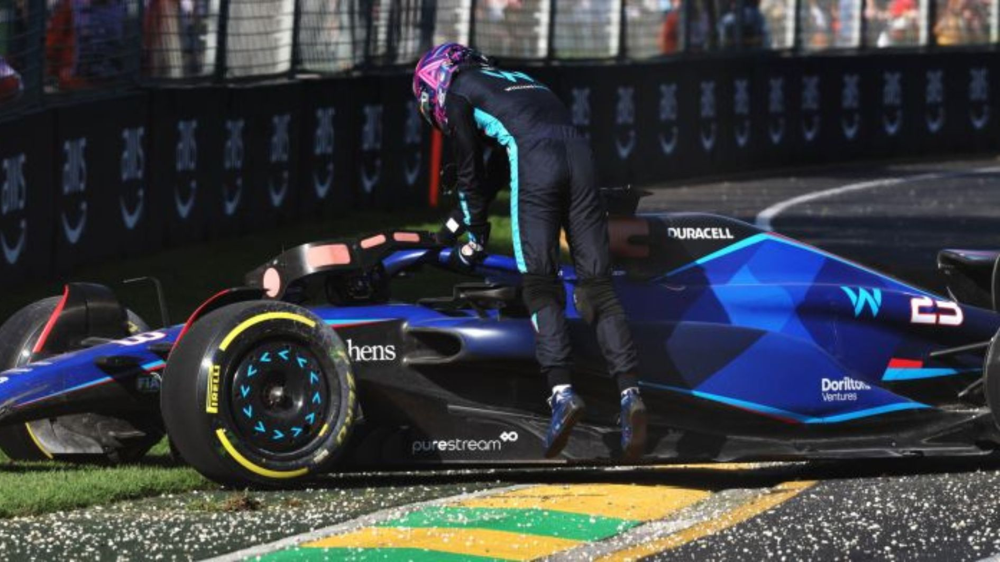

|

Formula One adalah kelas balap internasional tertinggi untuk mobil balap formula roda terbuka satu tempat duduk yang disetujui oleh Fédération Internationale de l'Automobile. Kejuaraan Dunia Formula Satu FIA telah menjadi salah satu bentuk balap utama di seluruh dunia sejak musim perdananya pada tahun 1950. |
|||
|
MERCEDES CRASH Formula One is the highest class of international racing for open-wheel single-seater formula racing cars sanctioned by the Fédération Internationale de l'Automobile. The FIA Formula One World Championship has been one of the premier forms of racing around the world since its inaugural season in 1950. |
KECELAKAAN ALBON Formula One is the highest class of international racing for open-wheel single-seater formula racing cars sanctioned by the Fédération Internationale de l'Automobile. The FIA Formula One World Championship has been one of the premier forms of racing around the world since its inaugural season in 1950. |
MAX WORLD CHAMP 23 Formula One is the highest class of international racing for open-wheel single-seater formula racing cars sanctioned by the Fédération Internationale de l'Automobile. The FIA Formula One World Championship has been one of the premier forms of racing around the world since its inaugural season in 1950. |
|
| p | |||